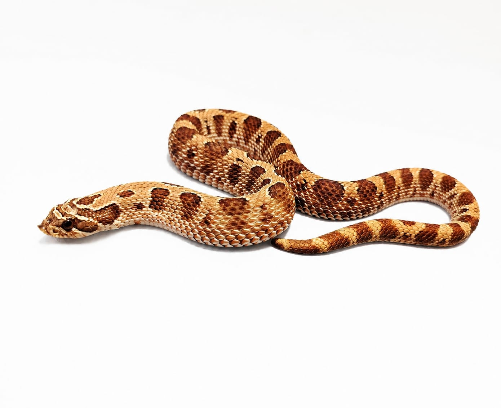

Especie: Western Hognose
Sexo: Macho
Morph: Conda, Red, Het Axanthic
Año: 2024
Peso: 95 g
Origen: CODE
Estado: Adulto
Ejemplar valioso para la crianza, ya que combina la reducción de patrón con un color base intensificado y genética oculta para fases en escala de grises.
Forma parte del Archivo Genético CODE como registro documental permanente.